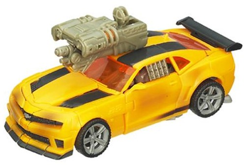
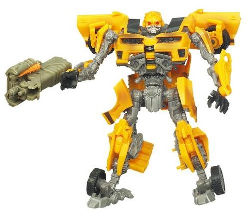
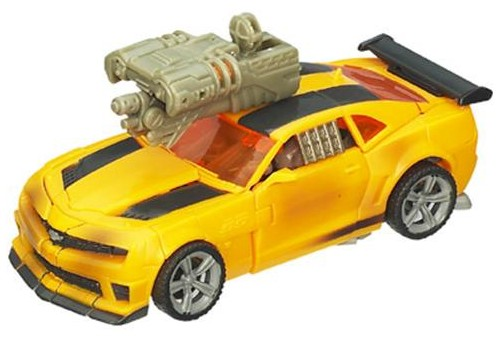
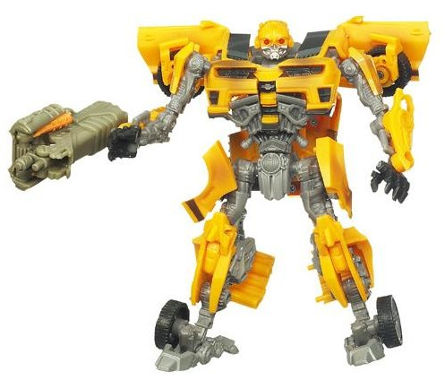
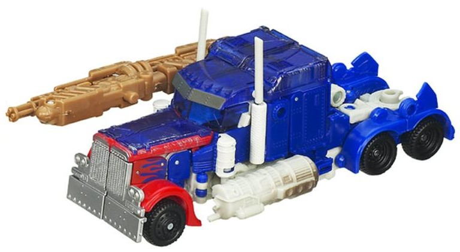
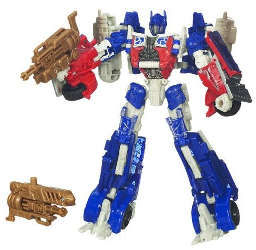
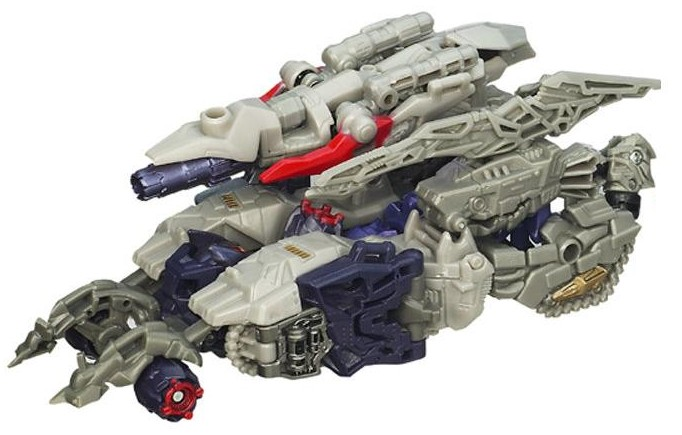
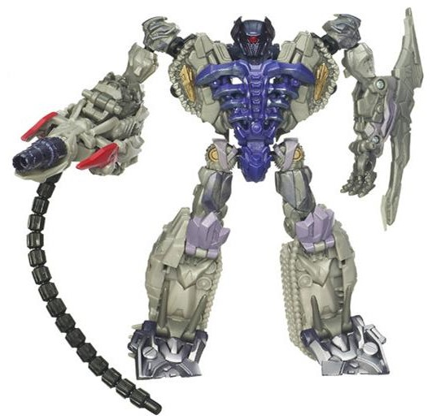

 
Allegiance : Autobot
Size : Deluxe
Difficulty of Transformation : Medium
Color Scheme : Black, moderately dull yellow, gray, and some silver, light greenish brown, light orange, and transparent light red
Rating : 8.6
 "Streetside
Bot Brawl" 3-pack (Toys "R" Us Exclusive)
"Streetside
Bot Brawl" 3-pack (Toys "R" Us Exclusive)
Set Price : $50 (U.S.)
(NOTE: Because this set is composed of repaints,
this is not a full-blown review. This mainly covers any changes made to
the set and the color scheme, and merely compares it to the original versions
of these molds. For a review on the original DotM deluxe Bumblebee, go
here
.
For a review on the original DotM voyager Optimus Prime, go
here
.
For a review on the original DotM voyager Shockwave, go
here
.)
 Bumblebee
Bumblebee


Allegiance
: Autobot
Size
: Deluxe
Difficulty of Transformation
: Medium
Color Scheme
: Black, moderately
dull yellow, gray, and some silver, light greenish brown, light orange,
and transparent light red
Rating
: 8.6
This store-exclusive
Bumblebee is more of a slight variant of the original toy than a straight
up "repaint". The orangish-yellow, black, and silver are more or less the
same and in the same places as on the original, mass-market version of
this mold; the gray plastic used for most of his "robot bits" is of a more
straightforward, less bluish shade than the original, but it's not exactly
a huge change. There's three changes to this Bumblebee that I would consider
noteworthy, two of them related to his colors; the first are some light
"battle damage" paint apps on his vehicle mode. They're more like slight
burn marks, being only light brushings of black in a spray-paint pattern,
but they do "dirty up" the look of the vehicle some. There's also a faded
"racing stripe" in front of the rear two wheels. The second change is that
Bumblebee's transparent plastic is now a light red, which makes him look
a bit more evil, like his
DotM Cyberfire
version
. I think that, though not a movie-accurate change, it's a positive
one, and perhaps demonstrates his "rage" at being damaged, I suppose. On
the negative side, his headlights aren't detailed, likely because he has
a few other paint apps elsewhere.
No mold changes have
been made to the "core" Bumblebee figure, but the third noteworthy change
for the figure is regarding his Mechtech weapon; he doesn't have his original,
but rather an oddly greenish-brownish colored version of
Skids'
weapon. I like the orange bits for the double-barreled blaster, but the
core color of this weapon just looks ugly to me, and it's not as good as
Bumblebee's "normal" Mechtech weapon regardless.
 Optimus
Prime
Optimus
Prime


Allegiance
: Autobot
Size
: Voyager
Difficulty of Transformation
: Medium
Color Scheme
: Dark blue, off-white,
transparent dark blue, brown, and some red, silver, dark charcoal gray,
and black
Rating
: 7.8
This version of Optimus
Prime has a few more obvious changes to his color scheme than the Bumblebee
he's packed with, but I'd still consider him more of a "variant" than an
outright redeco. Let's cover the positive changes to his colors first;
the most obvious is that the gray plastic on the original is much brighter,
more of an off-white; this also extends to a rather neat "fractured" off-white
pattern on his robot chest, and having his smokestacks and side tanks off-white
in vehicle mode. I think this looks a fair bit better than the gray, as
it offers more contrast and visual "pop" while still not deviating much
from Prime's core color scheme. He's also got a few "battle damage" paint
apps, including some spray apps on his side tanks in vehicle mode as well
as some silver "worn metal" paint apps along the top of his vehicle mode
(however, unlike the promo images above, the final version doesn't have
the battle damage on the lower arms). These help to tie Prime in thematically
with Bumblebee and look nice by themselves. However, the price of some
of the other paint apps was, I think, not quite worth it; the big negative
with this Prime is that most of the top of his vehicle mode is entirely
unpainted-- and given that a fair amount of this is transparent plastic,
this is definitely a bad thing. His transparent plastic is now pretty much
the same shade of dark blue as most of the rest of his vehicle mode, and
thus it looks like his vehicle mode is "unfinished" on this top area, particularly
since except for one tiny area he's devoid of his famous flames on this
toy.
Just like Bumblebee,
no changes have been made to the "core" of this toy, but the Mechtech weapon
is different; this version of Optimus comes with a bronze-colored version
of
Laserbeak's
Mechtech weapon. I always
thought this Mechtech weapon mold was one of the coolest, and am glad to
see it used again (and in a nice color to boot); I feel it's way better
than the original Mechtech weapon that came with this mold, and this (plus
the off-white) are what bumps up this Prime just a tiny notch above the
original release for me, even in spite of the "unfinished" look of part
of the vehicle mode.
Shockwave


Allegiance
: Decepticon
Size
: Voyager
Difficulty of Transformation
: Medium
Color Scheme
: Light milky gray,
moderately light milky gray, and some black, transparent cherry red, light
pale metallic purple, pale metallic gold, moderately dark dull purple,
silver, light red, and royal purple
Rating
: 6.7
Shockwave is the one
in this set that's definitely different, and is likely the one most will
buy the set for, primarily. His color scheme is an homage to G1 Shockwave's
"original" color scheme, before the mold was re-appropriated as a Transformer--
originally "Astro Magnum", it was sold as "Galactic Man" in many Radio
Shack stores, and got the fan nickname "Shackwave". So this is movie "Shackwave",
essentially. Although I appreciate the homage, I have to say-- one of the
last things the movie line needed was more gray plastic. Most of Shockwave's
plastic is either light or moderately light gray, and by itself looks pretty
dull. Luckily, there are plenty of accent colors added to help lessen this--
the most eye-popping-worthy are the various shades of purple on Shockwave
(THREE, interestingly enough), which all contrast with the grays quite
well. The shade of purple used for the chest is particularly eye-catching.
There's some light "battle damage" silver paint apps on Shockwave's chest,
which do their job of looking like "worn metal" quite well. There's also
a bit of silver "fade" on the feet. In addition to purple to make him more
"Shockwavey", though, there's also a bit of gold and light red used on
a few spots around the toy, both of which help to add a bit more color
variety to it. I particularly like the light/bright red, which pops particularly
well in vehicle mode and brings more contrast to the toy than any other
color.
No mold changes have
been made to this version of Shockwave.
Two-thirds of the "Streetside Bot Brawl" set isn't really different enough from the mass-release versions to warrant purchasing them again, and for Shockwave-- the one who IS different enough-- it's a mostly inferior color scheme, obscure homage or not. If you don't own any of these three molds yet and want them, this set is probably an easy pickup given the slight discount you get compared to buying them each individually; but if you already own some version of these DotM movie Prime & Bumblebee molds, this set is an easy pass except for the most diehard Shockwave fans.
Reviews by Beastbot
(Pics from Hasbro .)